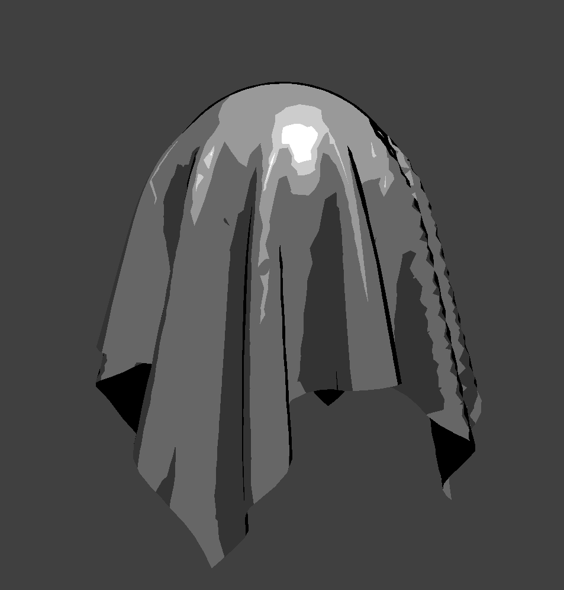
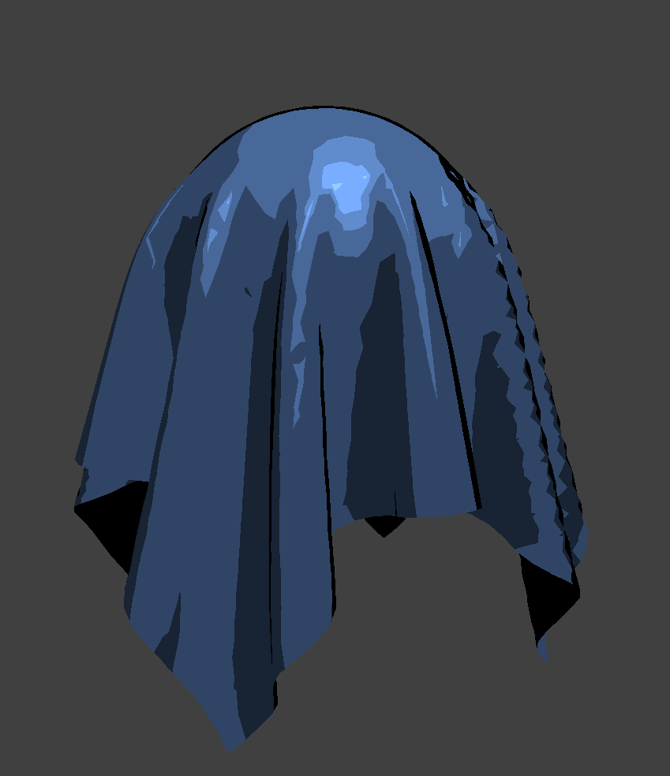
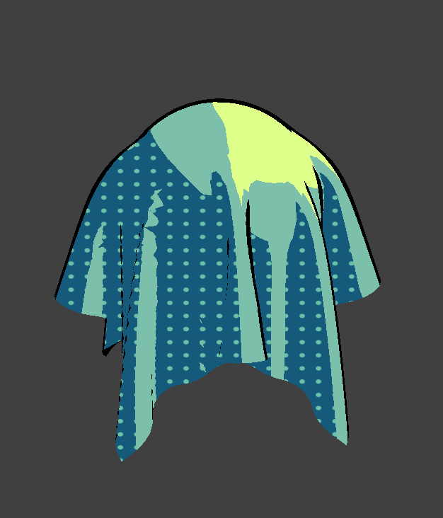
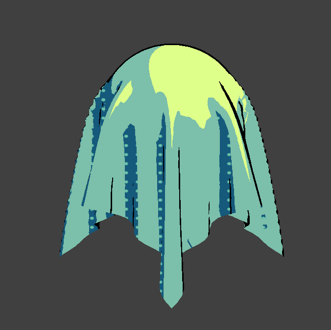

We successfully implemented the non-photorealistic rendering (NPR) and applied the texture shaders to the clothsim from homework 4 to create an artistic effect.
We created a shader with discrete brightness levels by editting the phong shader in order to get flat colors with different levels of RGB value. In addition, we added rim lighting in order to draw the outline of the objects, which makes them look more like animation.
|  |  |
We also edited the texture shader to figure out how to put in a texture as a single shade, and made it so that the texture displayed as a flat image parallel to the plane.
|  |  |
We are on track for our milestone. We were able to customize our shader and create a non-photorealistic look with discrete brightness levels, an outline to the rim of the object, and custom textures for the shadows. We were able to add polka dot patterns to dark shadows, commmonly used in manga-style art with screentones.
We wanted to do one shader per person, and experimenting with more shaders will likely be a goal to achieve moving forward.
We saw that the homework code did not allow for general .obj files, because there wasn't geometry support for triangles (only planes and spheres). We want to add support for rendering general .obj files.